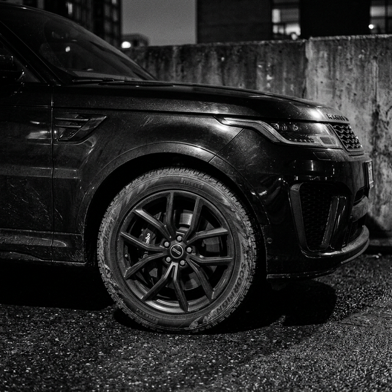

Seat bünyesinden ayrılarak kendi bağımsız performans markası haline gelen Cupra'nın tamamen kendine özgü geliştirdiği ilk model olan Formentor, pazarın en iddialı crossover modellerinden biri. Keskin hatları ve saldırgan duruşuyla "büyük ve yakışıklı" sıfatını sonuna kadar hak ediyor. Özgün bakır rengi (copper) detayları ve mat gövde seçenekleriyle sokaklarda anında fark edilen karizmatik bir duruş sergiliyor.
Standart bir SUV olmaktan çok uzak olan bu araç, yüksek performanslı bir hatchback'in sürüş dinamiklerini yerden yüksek bir gövdede birleştiriyor. Mühendisler, ağırlık merkezini ustalıkla aşağıya çekerek virajlarda bir spor otomobil çevikliği hissettirmeyi başarmışlar. Şasinin sağlamlığı ve direksiyonun hissi, otomobil ile yollar arasındaki iletişimde muazzam bir akıcılık sağlıyor. Günlük sürüşlerde bile içinizdeki otomobil tutkusunu alevlendirecek güçlü bir karaktere sahip olmasının sırrı da işte bu mühendislik yatırımıdır.

Agresif Çizgiler, Sportif Sürüş
Aracın tasarımındaki VZ (Veloz) unsurları, heybetli hava girişleri ve dörtlü egzoz çıkışı Cupra'nın yarış DNA'sına selam çakıyor. Özellikle gece sürüşlerinde boydan boya uzanan arka LED stop lambası (infinite light) markanın yeni ve modern imzasını taşıyor. Farların keskin köşeleri adeta gözdağı veren bir yırtıcıyı andırırken, yoldaki diğer sürücülerin dikkatini anında üstüne çekiyor.
İç mekanda sürücüyü saran spor koltuklar (bucket seats) ve sürücü odaklı kokpit yapısı performans hissini pekiştiriyor. Direksiyon simidinin üzerindeki sürüş modu değiştirme ve motor çalıştırma butonları ise yarış otomobillerinden doğrudan alınan özellikler. Büyük dokunmatik ekran, minimal ama şık tasarlanmış detaylarla çevreleniyor, bu da bir bakıma İspanyol ateşinin iç tasarımda gösterdiği yalın şıklıktır.

"Formentor, sadece A noktasından B noktasına gitmek için değil, o yolculuğun kendisinden heyecan ve keyif almak için tasarlanmış devasa bir makine."
Son Söz: Yenilikçi ve Cesur
Otomotiv dünyasındaki birbirine benzeyen crossover tasarımlarının aksine Formentor, cesur ve taze bir nefes arayan otomobil tutkunları için mükemmel bir tercih olarak öne çıkıyor. Hem gündelik kullanıma uygun hem de hafta sonu virajlı yollarda sınırları zorlayabilecek çok yönlü bir canavar.
Gelecek yıllara damgasını vuracak gibi görünen bu eşsiz dizayn dili, Cupra'nın daha nice çarpıcı tasarımlara imza atacağının da apaçık bir habercisi. Eğer yepyeni, karizmatik ve performansı her an hissettirecek bir sürüş yol arkadaşı arıyorsanız, bu araç kesinlikle ilk sıralarda yer almayı hak ediyor.